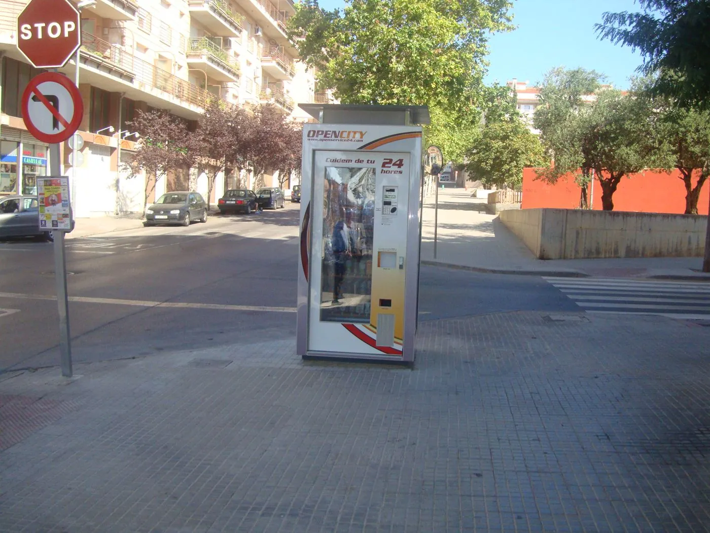

En Openservice teníamos cuatro marcas de vending, y los números nos repetían una y otra vez lo mismo: las máquinas que más vendían eran las que nunca cerraban.
Un día, paseando, me fijé en una caseta de la ONCE en plena calle y me hice una pregunta sencilla: si ella puede estar ahí, ¿por qué no un pequeño servicio abierto las 24 horas, para cuando la farmacia o la tienda ya han cerrado?
Así nació Open City: tiendas automáticas en la vía pública con productos de primera necesidad. Agua, potitos y chupetes para bebés, compresas, preservativos, parafarmacia y algún snack saludable. Lo que necesitas justo cuando no hay nada abierto.
Ya no era una máquina en un parque, era un punto de servicio y de comunicación para el pueblo.
La idea era buena, pero tenía dos enemigos. El primero, el vandalismo. Diseñamos una carcasa protectora a medida, con su propio proyecto y su certificación CE, y llevamos la conexión eléctrica bajo tierra para que fuera segura para todos.

Elegimos Castellar a propósito: era una zona con problemas de vandalismo, el mejor sitio para saber si la carcasa aguantaba. La prueba de fuego llegó la noche de San Juan, cuando metieron petardos dentro de las máquinas y destrozaron varias. Y el vinilo, aunque era antigrafiti, había que limpiarlo cada día. Tomamos nota de todo y reforzamos el diseño. Un piloto está para eso: para que los problemas aparezcan antes de crecer.
El segundo, la burocracia. Una tienda en un parque público no se pone con un apretón de manos: hubo que ir a licitación pública, publicada en el BOE. Y apareció un problema que no habíamos previsto. Los laterales de la máquina llevaban publicidad, y el Ayuntamiento ya tenía contratos publicitarios adjudicados. Aquello podía tumbar todo el proyecto.
La solución fue darle la vuelta: cedimos esos laterales y unas marquesinas iluminadas al propio Ayuntamiento, para que comunicara sus campañas a los vecinos sin coste. Y una parte de cada venta iría a iniciativas de la propia ciudad. Lo que era un obstáculo se convirtió en el mejor argumento: ya no era una máquina en un parque, era un punto de servicio y de comunicación para el pueblo.
El piloto arrancó en 2008 en Castellar del Vallès, con 8 puntos: 3.542 unidades vendidas y casi un 50 % de rentabilidad media.
De Open City aprendí algo que sigo aplicando: cuando un proyecto choca con un interés, no siempre hay que pelear. A veces basta con encontrar la forma de que el otro también gane.
— Víctor